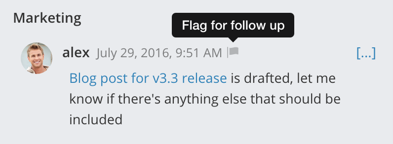
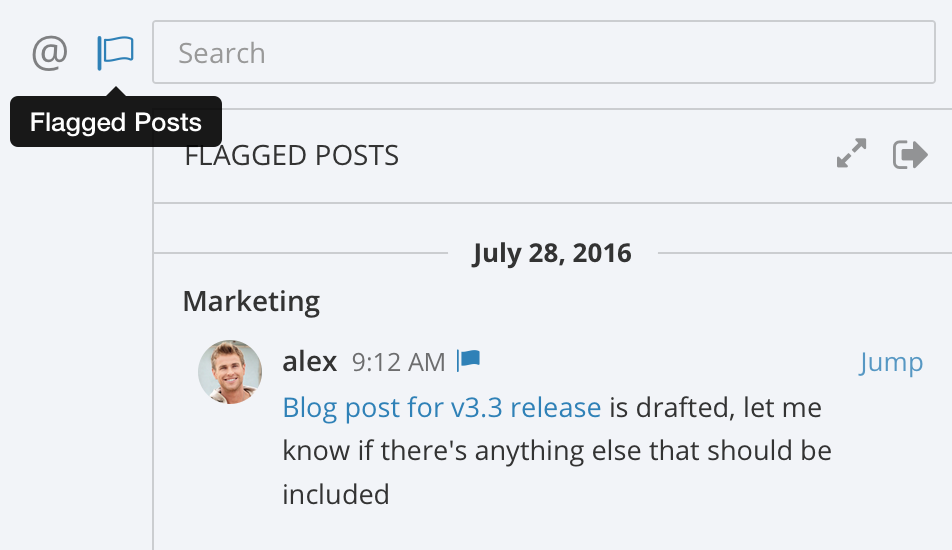
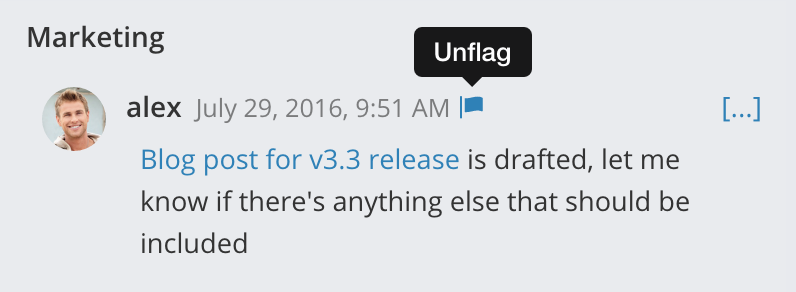

<link rel="import" href="../../bower_components/polymer/polymer.html">
<link rel="import" href="../../bower_components/polymer-bootstrap/polymer-bootstrap.html">
<link rel="import" href="../../bower_components/iron-media-query/iron-media-query.html">

<dom-module id="sameview-docMail">
  <link rel="import" type="css" href="../../css/animate.min.css">
  <link rel="import" type="css" href="../../css/page.css">
  <link rel="import" type="css" href="../../css/style.css">
  <template>
    <style include="polymer-bootstrap">
      a:focus,a:hover{
        text-decoration: none;
      }
    </style>
      <iron-media-query query="max-width: 768px" query-matches="{{_smallScreen}}"></iron-media-query>
    <div class="" fade-in$="[[!loading]]" hidden$="[[failure]]">
      <div role="main" class="document" style="margin-top:30px;">
        <div itemprop="articleBody">

          <div class="section">
            <h1>标记邮件</h1>
            <p>标志是标记邮件以跟进的方式。您的旗帜是个人的，不能被其他用户看到。</p>
            <p>我们喜欢使用标志的一种方法是标记以后要回复的消息。当有人要求需要工作的东西时，这很有用。我们举报这个帖子，继续做我们正在做的事情，然后回到我们的标记帖子列表。工作完成后，我们可以回复帖子，并将其从列表中清除。</p>
            <div class="section">
              <h2>举报讯息</h2>
              <p>要尝试一下，将鼠标悬停在显示标志图标的消息上。单击图标以标记邮件以进行跟进。</p>
              
            </div>
            <div class="section">
              <h2>查看已标记的消息</h2>
              <p>要查看已标记邮件的列表，请单击搜索框旁边的标志。</p>
              
            </div>
            <div class="section">
              <h2>取消标记消息</h2>
              <p>要从标记的列表中删除某个项目，请单击消息旁边的标志以将其清除。</p>
              
            </div>
          </div>
       </div>
      </div>

  </div>
</template>
<script>
  Polymer({
    is: 'sameview-docMail',

     ready: function(){
       var win = $(window);
       $(window).resize(function(){
         this.winwidth = win.width();//屏幕的宽  .width()
         this.winheight = win.innerHeight()-1;//屏幕的高
         var bgHeight = this.winheight;
        //  $(this.$.bg).height(bgHeight);
       });
       this.winheight = win.innerHeight()-1;//屏幕的高
       this.winwidth = win.width();//屏幕的宽  .width()
       var bgHeight = this.winheight;
      //  $(this.$.bg).height(bgHeight);

     },

  });

</script>

</dom-module>
